Как построить сводные таблицы в Excel, LibreOffice, OpenOffice и таблицах Google
В предыдущих публикациях я поделился информацией о том, как импортировать данные из Google Analytics в различные процессоры электронных таблиц (мы рассматривали импорт в Google таблицы и Excel). Но импорт — это только первый шаг на пути к полноценному анализу данных. После загрузки всей необходимой вам информации в редактор электронных таблиц, ее необходимо визуализировать и только потом анализировать.

Самый удобный и быстрый инструмент для преобразования массива данных в информативный отчет — сводные таблицы. В основе сводных таблиц лежит технология OLAP, описанная в 1993 году известным исследователем баз данных и автором реляционной модели данных Эдгаром Коддом. По сути, сводная таблица — это инструмент обработки данных для их группировки и обобщения.
Любая сводная таблица строится на основе определенной базы данных. В виде базы данных выступает массив, состоящий из полей и записей. Каждая строка (запись) в базе данных представляет собой информацию об отдельном случае, объекте или состоянии изучаемого объекта, а каждый столбец (поле) является параметром, свойством или признаком всех исследуемых объектов. Например, параметром может быть источник трафика, описание информации об источнике. В поле «источник трафика» будет, например, Google. Все поля базы данных разделяются на два типа: измерения («параметры» в терминологии Google Analytics) и меры («показатели» в терминологии Google Analytics). Измерением является название или свойство объекта, в разрезе которых мы можем анализировать различные количественные показатели.
Каждое измерение содержит ряд элементов. Например, элементами измерения «Источник трафика» будут: Google, Yandex и любые другие возможные источники трафика. Мерой являются количественные показатели, которые мы сравниваем между элементами измерений. Например: количество кликов, количество транзакций, сумма дохода. С общим понятием, что такое сводная таблица, мы ознакомились. Далее рассмотрим, как строятся сводные таблицы в различных процессорах электронных таблиц.
Безусловным лидером в реализации всего возможного функционала сводных таблиц является Microsoft Excel. По функциональным возможностям с данным инструментом могут соревноваться только такие гиганты BI индустрии, как QlikView и Tableau, но в связи с тем, что данные платформы являются достаточно дорогостоящими и в русскоязычном сегменте пока не успели получить особую популярность, в данной статье рассматриваться не будут.
Для построения сводных таблиц в описанных ниже мануалах используется одна и та же импровизированная база данных, состоящая из выгруженной из Google Analytics информации. Вы можете скачать эту таблицу по ссылке.
Сводные таблицы в Microsoft Excel 2013
Для построения сводной таблицы в Microsoft Excel 2013 вам необходимо открыть скачанный ранее csv файл. После чего, установив курсор на любой из ячеек таблицы, нажмите Ctrl+A — этим действием вы выделите всю базу данных. На её основе мы будем строить сводную таблицу. Далее перейдите на вкладку «Вставка» и в группе «Таблицы» нажмите «Сводная таблица».
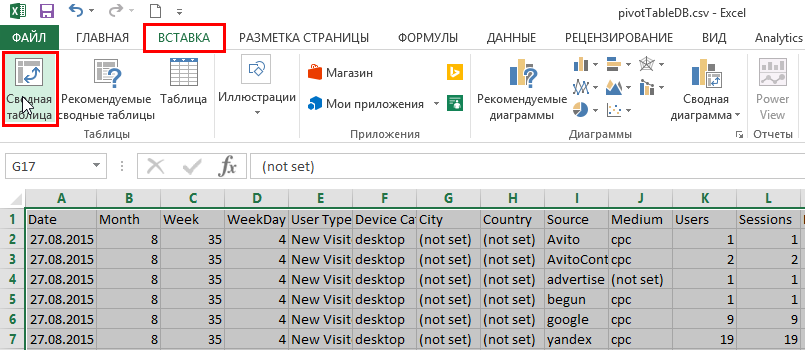
В открывшимся диалоговом окне «Создание сводной таблицы» ничего не меняем и жмем ОК.
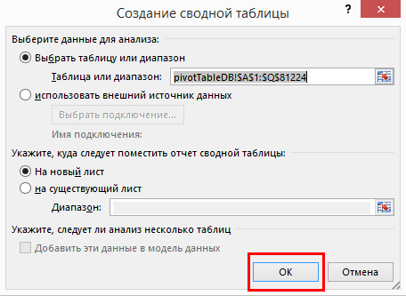
На этом процесс создания закончен и мы приступаем к работе со сводной таблицей. После создания таблицы в книге Excel будет создан новый лист. Он будет выглядеть так:
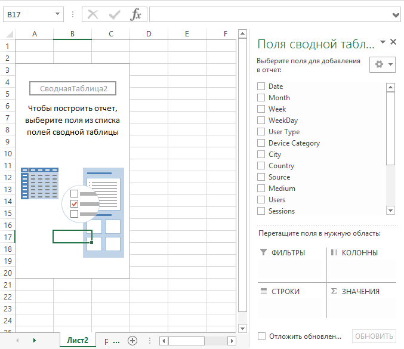
Как вы видите на скриншоте, данный лист состоит из самой сводной таблицы и конструктора сводной таблицы. Конструктор состоит, в свою очередь, из пяти частей:
- список полей;
- фильтры;
- колонны;
- строки;
- значения.
Для того, чтобы понять принцип работы сводной таблицы, давайте произведем следующие действия в конструкторе сводной таблицы:
- Поле Date с помощью правой кнопки мыши перетащим в область строк.
- Поле Device category перетащим в область колонн.
- Поле User type — в область фильтров.
- Поле Session — в область значений.
В итоге должно получиться так:
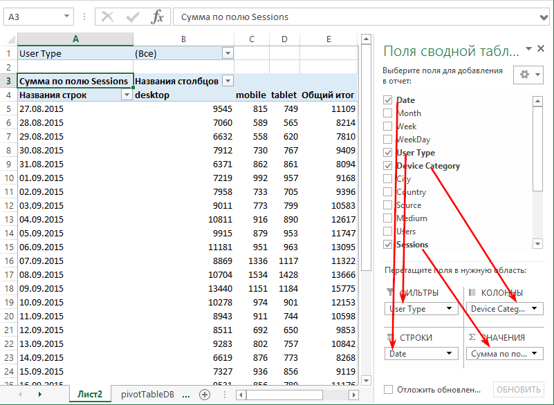
В результате четырех произведенных действий мы построили перекрестную таблицу, которую в Google Analytics построить нельзя. В строках мы видим даты, а по столбцам у нас располагается информация о количестве сеансов за определенную дату по каждому типу устройств. Это получилось, потому что мы перенесли поле Date в область строк. В отчете сводной таблицы в каждой строке появилась определенная дата.
После того, как мы перетащили поле Device category в область колонн, каждый столбец сводной таблицы получил название одного из существующих в базе типов устройств.
Перенеся поле Sessions в область значений, мы заполнили область значений сводной таблицы информацией о количестве сеансов за каждый день по каждому типу устройств. В полях, которые были добавлены в область значений конструктора сводной таблицы, можно изменять агрегирующую функцию. По умолчанию для числовых полей применяется суммирование, но вы можете выбрать любую другую из предложенных агрегирующих функций. Для этого достаточно в области значений сводной таблицы кликнуть правой кнопкой мыши и в выпадающем меню «Итоги по» выбрать нужную функцию.
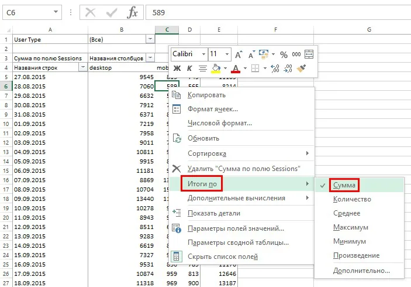
Остается вопрос: а что же нам дал перенос поля User type в фильтры? Чтобы это понять, давайте применим фильтр сводной таблицы и выведем в отчет информацию только по новым пользователям.
- Откройте перечень элементов поля User type, нажав на ярлык с изображением воронки в области фильтров сводной таблицы.
- Выберите элемент New user.
- Нажмите ОК.
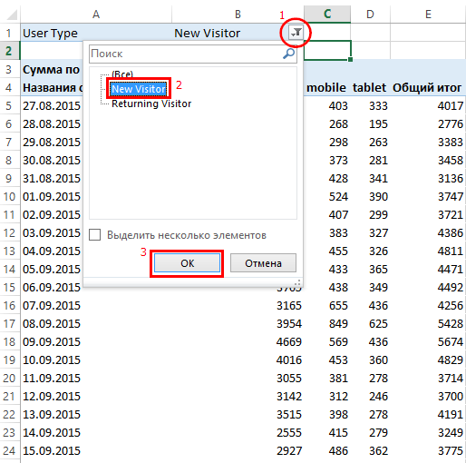
Теперь в область значений сводной таблицы выводится информация о количестве сеансов, совершенных только новыми пользователями в разрезе дат и типов устройств. Выше показан пример простейшей сводной таблицы, но на самом деле это далеко не весь функционал, который вы можете использовать для построения отчетов сводных таблиц. Любые параметры могут быть выведены в отчет в виде определенной иерархии. Для примера перенесем в область строк поле Week таким образом, чтобы оно находилось выше, чем поле Date.
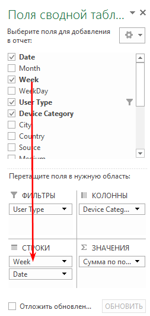
Отчет сводной таблицы будет сгруппирован не только по датам, но и по неделям. К тому же к каждой неделе будут прикреплены промежуточные итоги для более удобного анализа отображаемой информации. Теперь сводная таблица приобрела следующий вид:
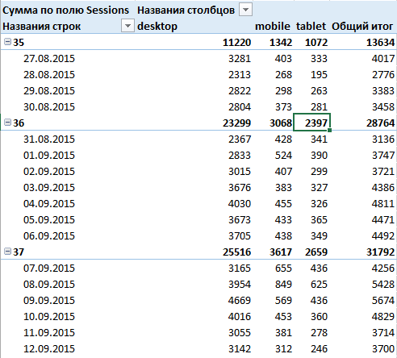
Такие иерархии можно строить и в области колонн. Вы можете смотреть информацию на уровне недель и при необходимости детализировать информацию по количеству сеансов до уровня дат простым нажатием на иконку +/−.
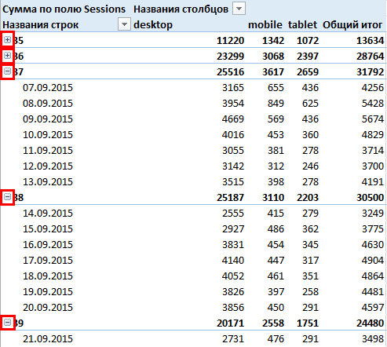
Очень полезной функцией сводных таблиц в Microsoft Excel является возможность дополнительных вычислений над любыми выведенными в таблицу показателями.
Например, мы хотим посмотреть не количество сеансов за каждую дату в разбивке по типам устройств, а какую долю сеансов в каждой дате занимает каждый тип устройств. Для этого достаточно кликнуть правой кнопкой мыши в области значений сводной таблицы, и в контекстном меню выбрать пункт «Дополнительные вычисления» => «% от суммы по строке».
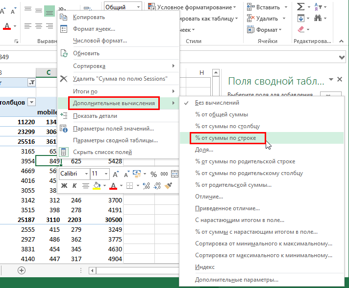
Теперь сводная таблица показывает долю каждого типа устройства в общем объеме сеансов за день.
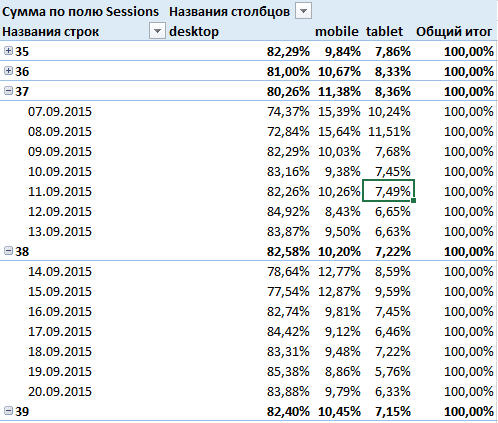
Зачастую при анализе данных нам необходимо получить какой либо относительный расчетный показатель. При правильном построении базы данных такие показатели в ней не содержатся, но информация о полях, необходимых для вычисления какого-либо расчетного показателя, как правило, в базе данных есть. Приведем пример. Нам надо вывести в таблицу показатель отказов для каждого типа устройств.
Показатель отказов является относительным расчетным показателем. В самой базе данных, на основе которой мы строили сводную таблицу, он не содержится, но у нас есть все необходимые поля для его вычисления. Чтобы создать вычисляемое поле в сводной таблице, необходимо передвинуть курсор в любую ячейку и перейти на вкладку «Анализ» в основном меню.
Далее в группе «Вычисления» открыть выпадающее меню «Поля, элементы и наборы» и выбрать пункт «Вычисляемое поле».
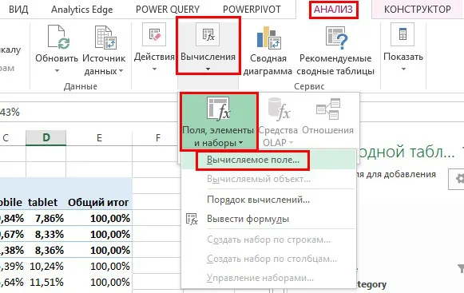
После этого появится диалоговое окно «Вставка вычисляемого поля», в котором необходимо дать название вашему вычисляемому полю. В данном случае наиболее подходящим будет «Показатель отказов». Заполнив название нужных полей сводной таблицы, напишите формулу, по которой будет рассчитываться наш показатель. При написании формул вы можете использовать все существующие формулы Microsoft Excel.
Единственное отличие от использования функций при создании вычисляемого поля и рабочего листа заключается в том, что при написании формулы в ячейке рабочего листа вы ссылаетесь на адреса нужных вам ячеек (например, A1), а при написании формулы вычисляемого поля сводной таблицы вы ссылаетесь на название полей сводной таблицы.
В нашем случае формула вычисляемого поля будет выглядеть как «=Bounces / Sessions». Дальше жмем OК.
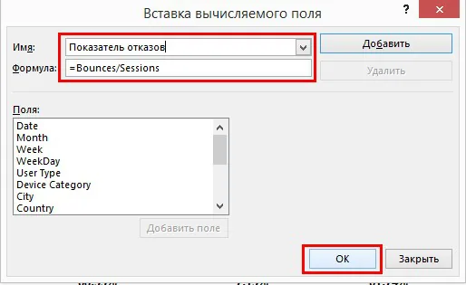
В область значений отчета сводной таблицы будет добавлено поле «Показатель отказов»:
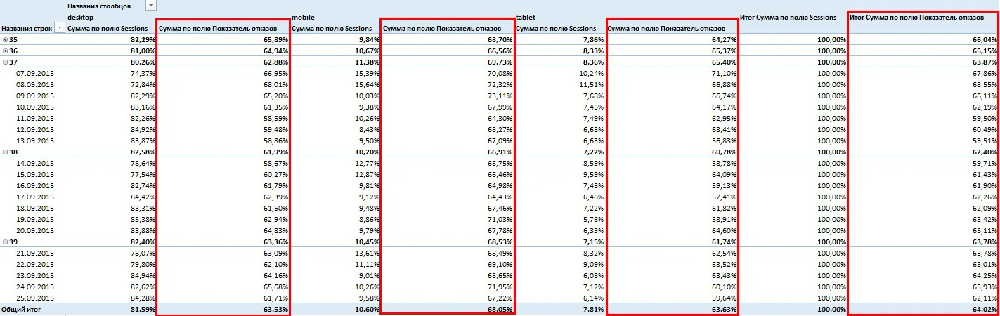
После добавления нового расчетного поля в таблице были автоматически созданы четыре новые колонны. И если сейчас посмотреть на конструктор сводной таблицы, мы увидим, что в область «Колонны» добавлено поле «Значения».
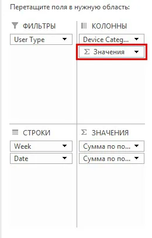
Это поле появляется автоматически, если в область «Значения» добавлено более одного поля. Вы можете перенести поле «Значения» в строки или колонны, в область фильтров и значений данное поля перенести нельзя.
По сути, это поле содержит название всех показателей (полей), выведенных в область значений. Для закрепления материала и преобразования сводной таблицы в более читабельный вид перетянем поле «Значения» в область строк под поле Date.
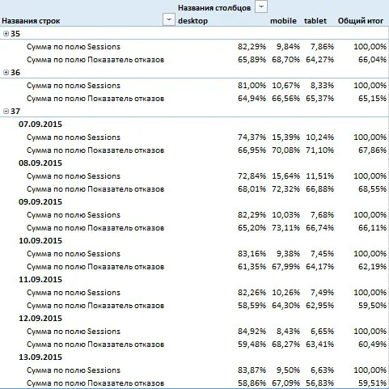
Теперь в таблице каждая дата разбита на две строки. В первой выводится доля сеансов по каждому типу устройства, во второй — показатель отказов для каждого типа устройств. Иногда в ходе анализа нам требуется каким-либо образом объединить некоторые элементы измерения в группы. Например, в данном случае нам может понадобиться объединить типы устройств mobile и tablet в одну группу и назвать ее Other.
Таким образом мы можем проанализировать различие между настольными устройствами и всеми остальными. Все, что нам необходимо сделать для группировки измерения, — это выделить нужные его элементы с помощью мыши, после чего вызвать контекстное меню правым кликом мыши и выбрать пункт «Группировать».
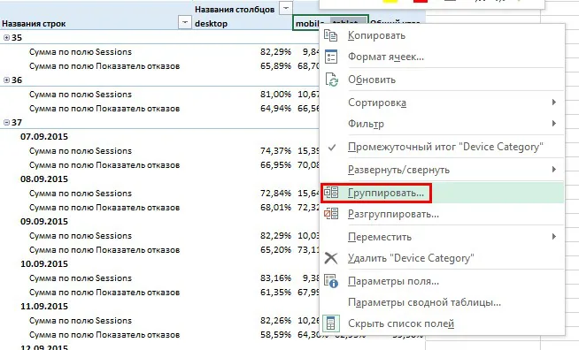
Элементы mobile и tablet будут объединены в группу, которой по умолчанию присваивается название «Группа 1». Чтобы переименовать группу, просто перейдите в ячейку с названием и введите новое Other.
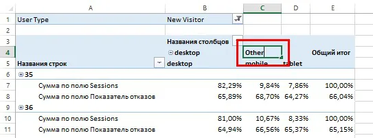
После группировки некоторых элементов измерения область столбцов отчета сводной таблицы стала двухуровневой, так же, как и область строк после добавления в нее поля Week. Теперь вы можете анализировать информацию по типам устройств на двух уровнях, переключаясь между ними с помощью +/−.
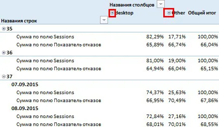
Далее вы можете настроить внешний вид вашей сводной таблицы, используя готовые шаблонные стили, либо выбрав свой собственный. Для создания кастомного стиля с помощью мыши выберите любую ячейку, которая входит в область отчета сводной таблицы, и, перейдя на вкладку «Конструктор», выберите один из предложенных стилей оформления.
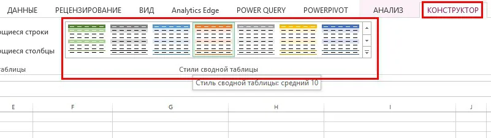
Также существует возможность добавления срезов и временных шкал. Хочу заметить, что этот функционал не доступен в старых версиях Microsoft Excel, возможность добавления срезов появилась в 2010 версии, а временные шкалы добавили только в 2013 году. Срез выполняет ту же функцию что и фильтр, который мы построили, добавив поле User type при построении сводной таблицы в область фильтров.
Единственное отличие заключается в том, что срез имеет более удобную визуализацию. Давайте добавим срез по Source. Для этого выделите любую ячейку, относящуюся к области отчета сводной таблицы, перейдите на вкладку «Анализ» и в группе «Фильтры» нажмите иконку «Вставить срез».
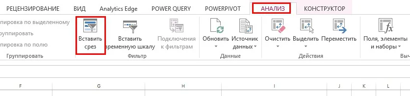
Откроется диалоговое окно «Вставка срезов», в котором вам необходимо выбрать, по каким полям вы хотите создать срезы. В нашем случае это поле Source.
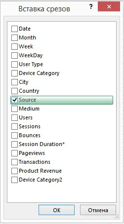
После нажатия ОК на рабочий лист будет добавлен срез. Использовать срез можно так же, как и обычный фильтр. Давайте для примера в созданном нами срезе выберем элемент «google» и тем самым в отчет сводной таблицы выведем информацию о доле каждого типа устройств по каждой дате только по сеансам, совершенным из источника «google».
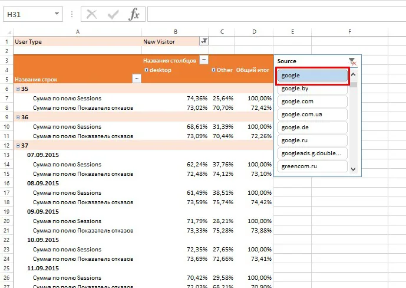
Зажав левый Ctrl, вы можете выбрать любое количество элементов среза, информацию по которым планируете вывести в отчет. Временная шкала работает по такому же принципу, как и срез, но строить ее можно только на основе полей, содержащих данные в формате даты. Создается она на вкладке «Анализ» с помощью кнопки «Вставить временную шкалу», находящейся в группе «Фильтры».
С помощью временной шкалы очень удобно выбирать период, за который мы хотим вывести данные в отчет сводной таблицы. Например, мы с помощью нескольких кликов можем вывести в отчет информацию только за август.
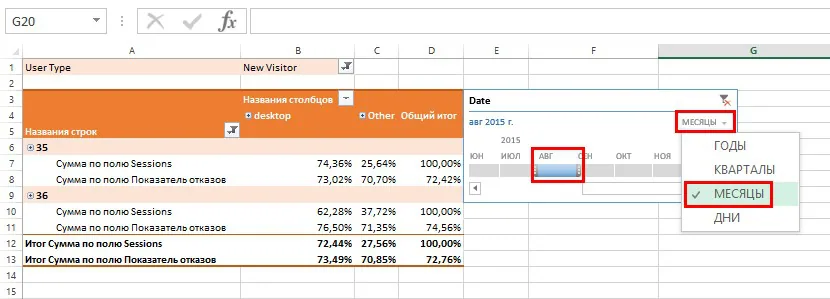
Функциональные возможности работы со сводными таблицами в Microsoft Excel 2013 выходят далеко за пределы описанного выше функционала, и в рамках одной статьи осветить все не получится.
Для тех, кто решил всерьез углубиться в изучение этого инструмента, советую ознакомиться с материалами, изложенными одним из ведущих специалистов по программному обеспечению электронных таблиц Биллом Джеленом в своей книге «Сводные таблицы в Microsoft Excel 2013» (если интересно, у меня есть электронная версия «Сводных таблиц в Microsoft Excel 2010»).
Сводные таблицы в Google Spreadsheets (Google таблицы)
Основное преимущество Google Spreadsheets — доступ к ним есть всегда и везде при условии наличия подключения к интернету. Именно это делает данный продукт наиболее удобным при совместной работе нескольких пользователей. Для построения сводной таблицы в Google Spreadsheets необходимо создать новую таблицу в своем Google Диске, перейдя по этой ссылке.
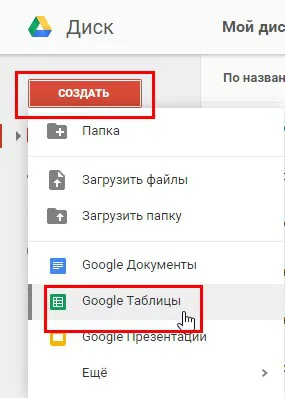
После этого импортируйте в созданную таблицу скачанную ранее базу данных (скачать csv файл с базой данных). Чтобы загрузить базу данных в таблицу, в меню «Файл» выберите пункт «Импорт».
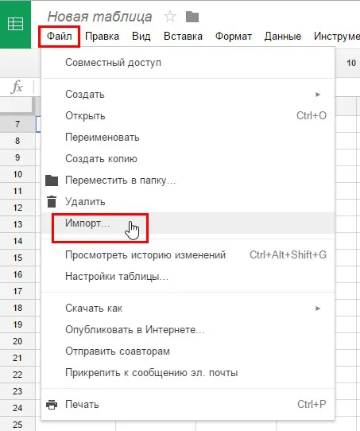
В открывшемся диалоговом окне переходим на вкладку «Загрузка» и жмем кнопку «Выберите файл на компьютере», после чего выбираем скачанный ранее файл pivotTableDB.csv.
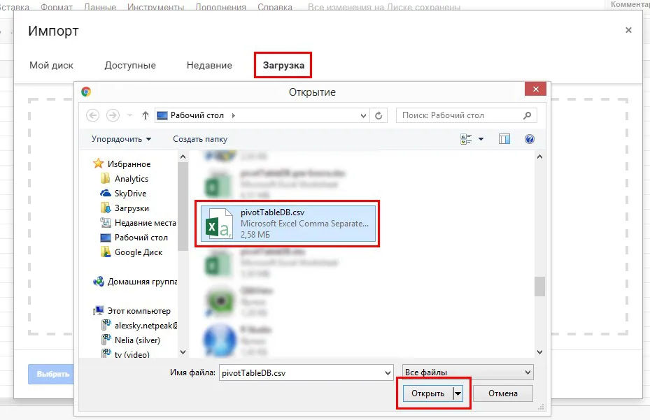
В диалоговом окне «Импорт файла» устанавливаем переключатель «Действие после импорта» в положение «Заменить текущий лист», а переключатель «Разделитель» устанавливаем в положение «Другое». В качестве разделителя вводим точку с запятой.
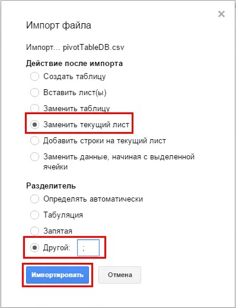
После нажатия кнопки «Импортировать» данные будут загружены в вашу таблицу на «Лист1». Теперь можно приступить непосредственно к созданию сводной таблицы. Для этого надо выделить весь загруженный массив данных. Наиболее быстрым способом в этом случае будет перейти в ячейку A1 и последовательно использовать сочетание клавиш Ctrl + Shift + Стрелка вправо, затем Ctrl + Shift + Стрелка вниз.
Далее переходим в меню «Данные» и жмем на пункт «Сводная таблица».
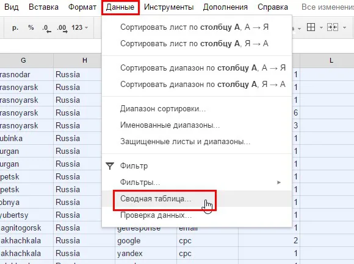
Далее в Google таблице, так же как и в Microsoft Excel, будет создан новый лист с названием «Сводная таблица 1», областью сводной таблицы и редактором отчетов.
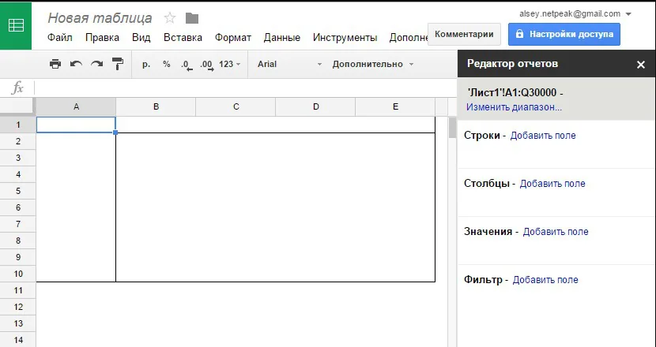
Редактор отчет так же состоит из четырех областей: «Строки», «Столбцы», «Значения», «Фильтры». Давайте пройдем путь построения сводной таблицы, описанный в примере выше. Для этого произведем те же четыре действия.
- В область «Строки» добавляем поле Date.
- В область «Столбцы» добавляем поле Device Category.
- В область «Значения» добавляем поле Sessions.
- В область «Фильтры» добавляем поле User type.
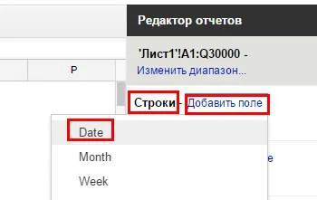
Сводная таблица приобрела знакомый из описания Microsoft Excel вид:
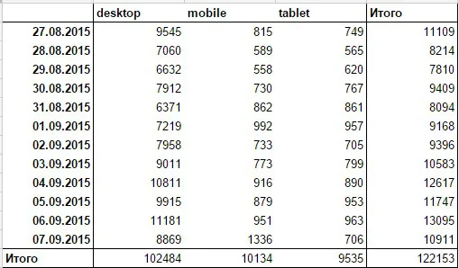
Так же, как и в Microsoft Excel, для полей, добавленных в область значений в Google таблицах, вы можете изменять агрегирующую функцию. Сделать это можно, выбрав нужную функцию из выпадающего списка в области значений редактора отчетов «Суммировать по».
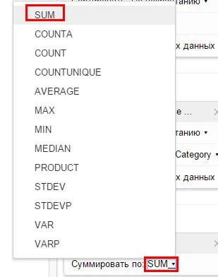
На данный момент единственным наиболее заметным отличием является то, что в область сводной таблицы не выводятся поля, добавленные в область фильтра редактора отчетов. Применить фильтр в сводных таблицах Google Spreadsheets можно только используя редактор отчета. Давайте отфильтруем сводную таблицу по новым пользователям.
Для этого в области фильтра редактора отчетов в выпадающем списке «Показать» отмечаем галочкой элемент New Visitor.
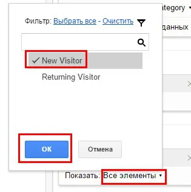
Далее, чтобы добавить возможность детализировать информацию не только по датам, но и по неделям, необходимо в редакторе отчетов в область строки добавить поле Week и перетащить его на уровень выше, чем поле Date.
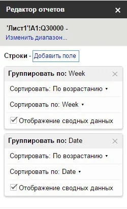
Теперь в отчете сводной таблицы представлены два уровня детализации, по неделям и датам.
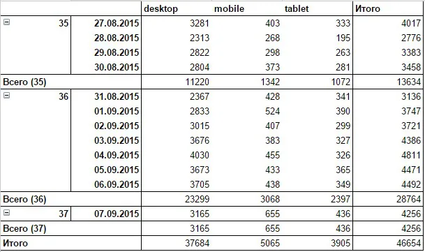
Для подсчета показателя отказов с помощью расчетного поля в области значений редактора отчетов нажмите «Добавить поле» и выберите пункт «Рассчитываемое поле».
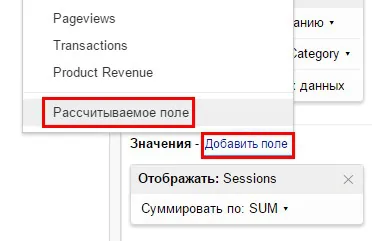
Далее необходимо ввести название расчетного поля и формулу. В нашем случае названием поля будет «Показатель отказов», а формулой для расчета «=bounces / sessions».
В отличие от Microsoft Excel, в данном случае названия полей в формуле расчета можно ввести только с клавиатуры. Это важно.
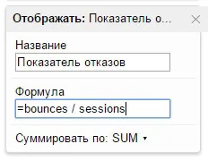
Теперь сводная таблица имеет следующий вид:
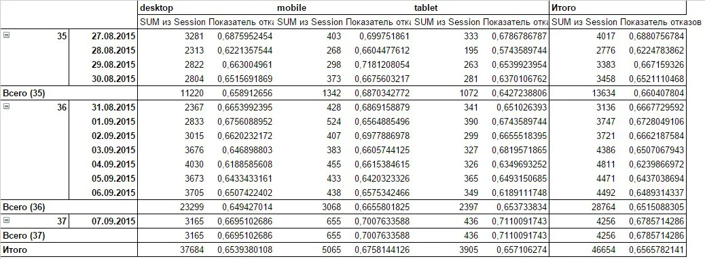
Для каждого типа устройства добавлен дополнительный столбец с информацией о показателе отказов. Если хотите привести таблицу в более читабельный вид и показатель отказов выводить второй строкой для каждой даты, а не вторым столбцом для каждого типа устройств, в редакторе отчетов в области значений переставьте переключатель в положение «как: Строки».
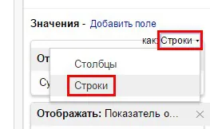
Отчет примет вид, в котором на каждую дату приходится две строки данных. В первой будет количество сеансов, во второй — показатель отказов.
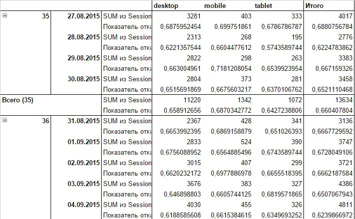
На этом функциональные возможности Google таблиц заканчиваются. В целом, этого достаточно для построения визуализации данных для проведения анализа.
Сводные таблицы в LibreOffice и OpenOffice
LibreOffice — бесплатный, десктопный процессор электронных таблиц. По функционалу возможности сводных таблиц LibreOffice и OpenOffice значительно уступают Microsoft Excel, но для решения большей части задач они вполне сгодятся. Процедуры построения сводных таблиц в LibreOffice и OpenOffice совершенно одинаковые, в связи с чем нет смысла описывать все этапы по отдельности. Поэтому в данном случае в качестве примера возьмем LibreOficce, но в OpenOffice с помощью совершенно идентичных действий вы можете создать такую же сводную таблицу.
Для создания сводной таблицы в меню «Файл» LibreOffice выберите пункт «Открыть», после чего укажите скачанный ранее файл pivotTableDB.csv. В диалоговом окне «Импорт текста» установите переключатель «Параметры разделителя» в положение «Разделитель», и в качестве разделителя установите «Точка с запятой».
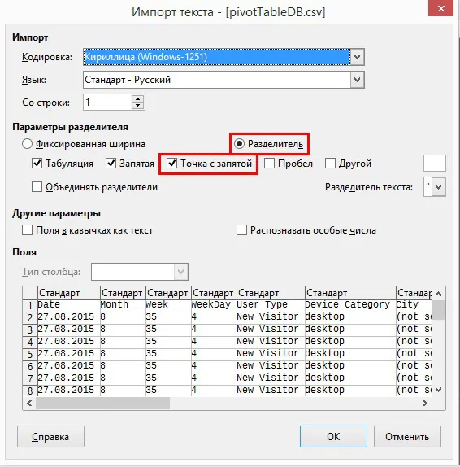
После нажатия ОК необходимая таблица данных будет загружена в документ. Теперь, когда у вас есть база данных, необходимо выделить ее нажатием Ctrl+A, и в в группе «Сводная таблица» (меню «Данные») нажать кнопку «Создать».
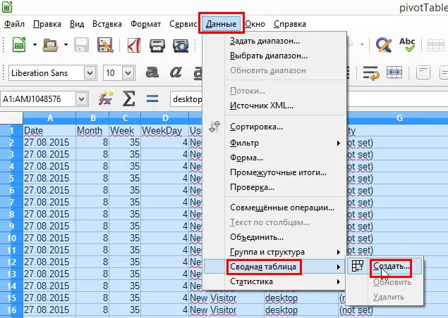
В качестве источника в диалоговом окне «Выбрать источник» устанавливаем переключатель в положение «Выбранное выделение». Нажимаем ОК.
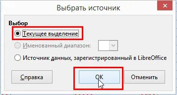
Далее появится диалоговое окно «Разметка сводной таблицы». Оно и является своеобразным конструктором сводной табицы из приведенных выше примеров с Microsoft Excel и Google Spreadsheets. Чтобы построить сводную таблицу, аналогичную двум предыдущим примерам, сделайте следующие действия.
-
В область «Поля страниц» перетащите поле User type, так как в LibreOffice область «Поля страниц» является областью фильтров сводной таблицы.
-
В область столбцов перенесите поле Device category. По умолчанию область столбцов уже будет содержать поле с именем «Данные». С помощью этого поля вы можете изменять положение рассчитываемых метрик. Примерно так же, как мы делали это в Excel и Google Таблицах. Тогда мы располагали информацию так, чтобы каждая дата содержала две строки: одну с данными о сессиях, а вторую — о показателе отказов. Так же и в LibreOffice вы можете менять расположение вычисляемых данных, отображая их в строках или столбцах.
-
В область «Поля строк» перенесите сначала поле Week, после чего под этим полем расположите поле Date.
-
В область «Поля данных» перетащите поле Sessions. Для того, чтобы изменить агрегирующую функцию либо настроить дополнительное вычисление для рассчитываемого поля, достаточно дважды кликнуть на него левой кнопкой мыши и выбрать из списка нужную функцию либо дополнительное вычисление. Ранее мы в примере с Microsoft Excel устанавливали в качестве дополнительного вычисления «Процент от суммы по строке». Чтобы настроить подобное вычисление в LibreOffice после двойного клика по полю Sessions, расположенного в области данных, в открывшемся диалоговом окне «Поле данных» раскройте меню «Отображаемое значение», установите «Тип: % от строки» и нажмите ОК.
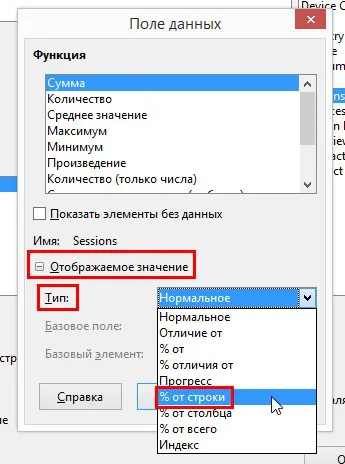
- Для быстрого изменения уровня детализации откройте подменю «Параметры», находящееся в нижней части диалогового окна «Разметка сводной таблицы», и установите там флажки «Добавить фильтр» и «Разрешить переход к деталям». Нажмите OK.
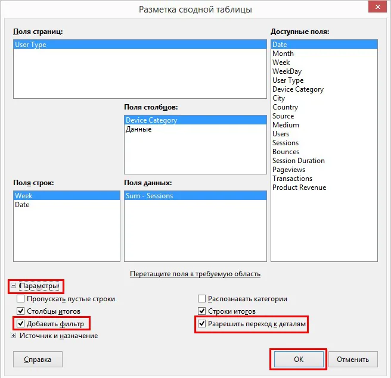
В ваш документ будет добавлена сводная таблица, аналогичная приведенным выше примерам. С одним исключением: в данной сводной таблице мы не вывели поле «Показатель отказов», так как на момент написания статьи LibreOffice не поддерживает функционал рассчитываемых полей. У вас получится такая сводная таблица:
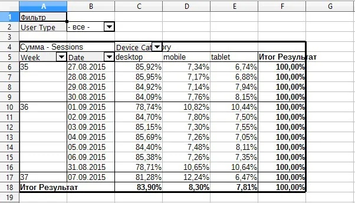
Заключение
Предлагаю сравнить функционал Microsoft Excel, Google Spreadsheets и OpenOffice по работе со сводными таблицами.
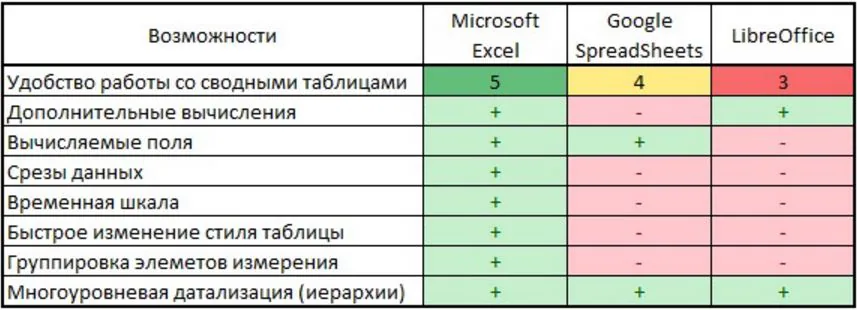
В данной таблице перечислен только тот функционал, который был описан в данной статье. Относительно Microsoft Excel, это даже не половина всех существующих возможностей по построению и использованию сводных таблиц.
Сводные таблицы — самый удобный инструмент для анализа больших массивов данных. Время, инвестируемое в изучение сводных таблиц, с лихвой окупится в будущем, когда вы за считанные минуты сможете из массива данных, насчитывающего десятки, а в некоторых случаях и сотни тысяч строк извлекать необходимую для анализа информацию.